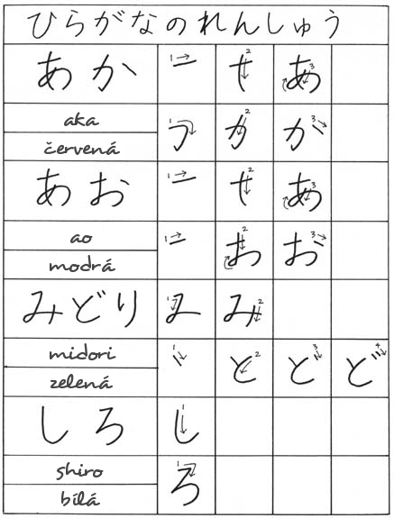

Nebo můžete také nahlednout na základní tabulku hiragany.
| aka あか | červená |
| ao あお | modrá |
| midori みどり | zelená |
| shiro しろ | bílá |
Poznámka: Jde o podstatná jména, o přídavných jménech si budeme povídat později.
Poznámka#2: To je z hiragany prozatím vše. Kdyby Vám to nestačilo, můžu doporučit učebnici Obrázková hiragana, kterou můžete koupit v Česko-Japonské společnosti levněji, než kde jinde. Jinak se dá pořídit i v Luxoru nebo kdekoliv na internetu.
| < | ^ |